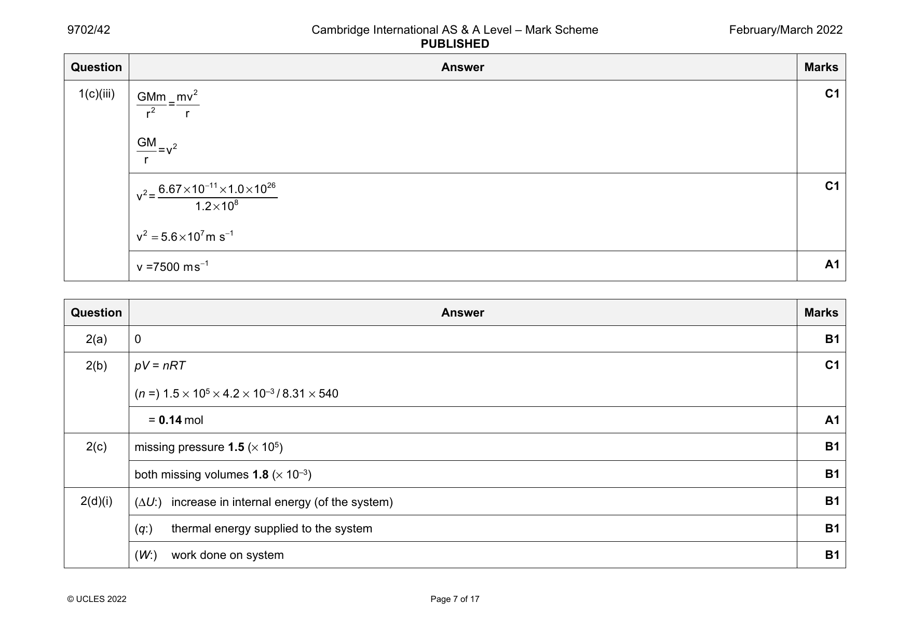
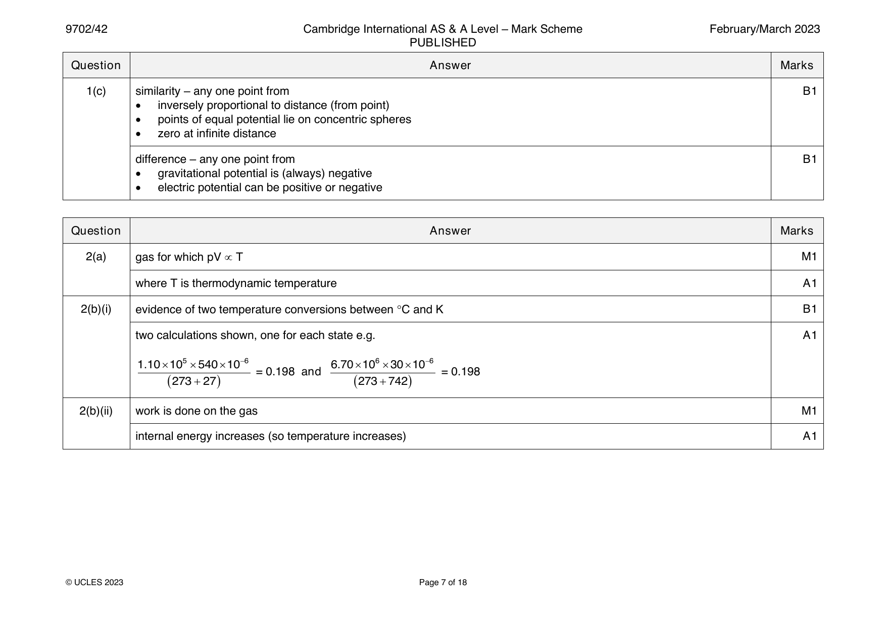
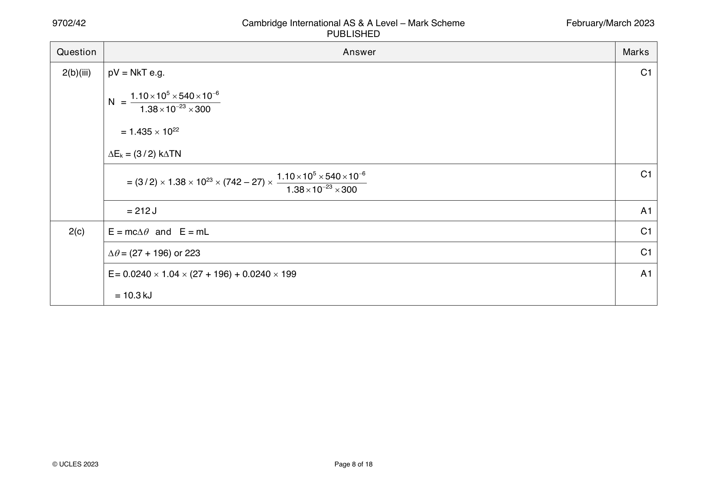
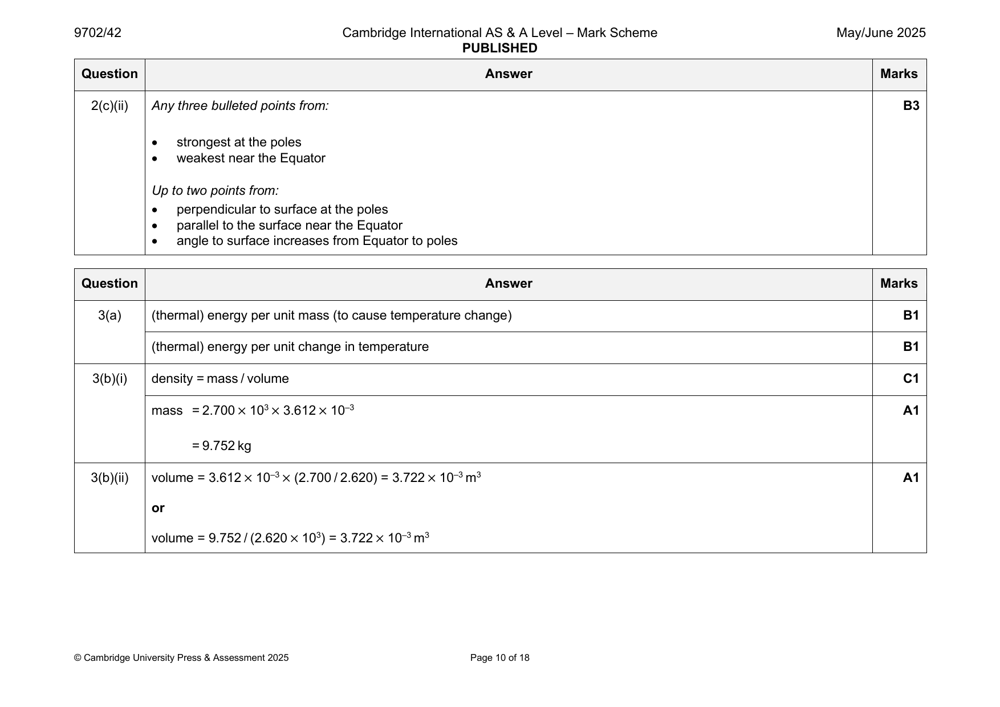
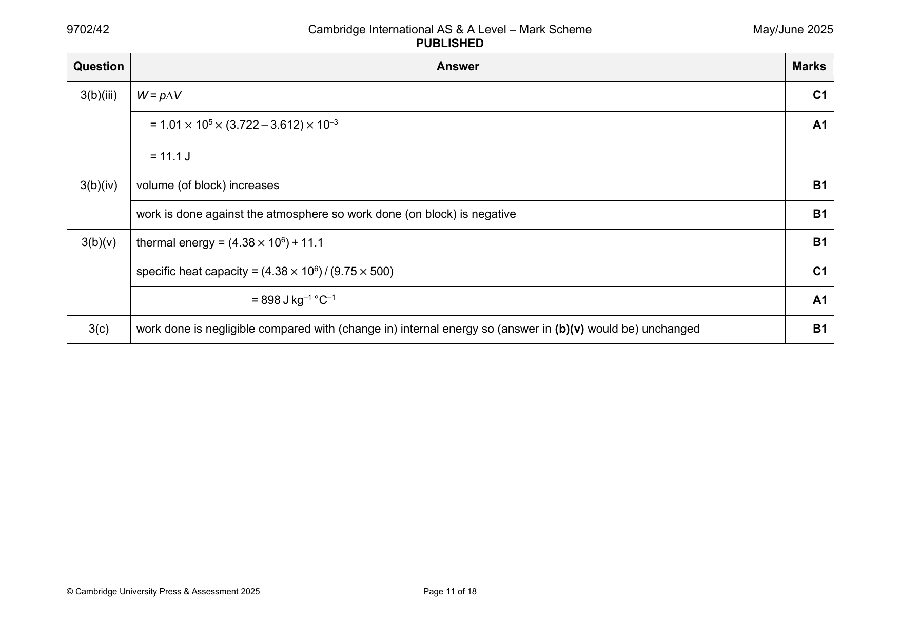

9702-2021-mj-41-q02
May/June 2021 · Paper 41 · Question 2 · 10 marks
2(a) pV = NkT C1
N = (1.8 × 10–3 × 3.3 × 105) / (1.38 × 10–23 × 310) = 1.4 × 1023 A1
or
pV = nRT and nN = N (C1)
A
N = (1.8 × 10–3 × 3.3 × 105 × 6.02 × 1023) / (8.31 × 310) = 1.4 × 1023 (A1)
2(b) speed of molecule decreases on impact with moving piston B1
mean square speed (directly) proportional to (thermodynamic) temperature B1
or
mean square speed (directly) proportional to kinetic energy (of molecules)
or
kinetic energy (of molecules) (directly) proportional to (thermodynamic) temperature
kinetic energy (of molecules) decreases (so temperature decreases) B1
2(c)(i) ΔU = 3/2 × k × ΔT × N C1
= 3/2 × 1.38 × 10–23 × (288 – 310) × 1.4 × 1023 C1
= – 64 J A1
2(c)(ii) decrease in internal energy is less than work done by gas M1
(thermal energy is) transferred to the gas (during the expansion) A1
© UCLES 2021 Page 9 of 18
Official mark scheme pages: 9 · source PDF URL
9702-2021-mj-42-q02
May/June 2021 · Paper 42 · Question 2 · 9 marks
2(a) pV = nRT C1
pV = nRT and N = nN C1
A
or
pV = NkT
3.1 × 10–3 × 8.5 × 105 = (N × 290 × 8.31) / (6.02 × 1023) A1
so N = 6.6 × 1023
or
3.1 × 10–3 × 8.5 × 105 = N × 1.38 × 10–23 × 290
so N = 6.6 × 1023
2(b)(i) (3.1 × 10–3 × 8.5 × 105) / 290 = (6.3 × 10–3 × 2.7 × 105) / T A1
so T = 190 K
or
6.3 × 10–3 × 2.7 × 105 = 6.6 × 1023 × 1.38 × 10–23 × T
so T = 190 K
2(b)(ii) ΔU = 3/2 × k × ΔT × N C1
= 3/2 × 1.38 × 10–23 × (190 – 290) × 6.6 × 1023 C1
= –1400 J A1
2(c) ΔU = q + w M1
q = 0 so ΔU = w A1
© UCLES 2021 Page 9 of 19
Official mark scheme pages: 9 · source PDF URL
9702-2021-mj-43-q02
May/June 2021 · Paper 43 · Question 2 · 10 marks
2(a) pV = NkT C1
N = (1.8 × 10–3 × 3.3 × 105) / (1.38 × 10–23 × 310) = 1.4 × 1023 A1
or
pV = nRT and nN = N (C1)
A
N = (1.8 × 10–3 × 3.3 × 105 × 6.02 × 1023) / (8.31 × 310) = 1.4 × 1023 (A1)
2(b) speed of molecule decreases on impact with moving piston B1
mean square speed (directly) proportional to (thermodynamic) temperature B1
or
mean square speed (directly) proportional to kinetic energy (of molecules)
or
kinetic energy (of molecules) (directly) proportional to (thermodynamic) temperature
kinetic energy (of molecules) decreases (so temperature decreases) B1
2(c)(i) ΔU = 3/2 × k × ΔT × N C1
= 3/2 × 1.38 × 10–23 × (288 – 310) × 1.4 × 1023 C1
= – 64 J A1
2(c)(ii) decrease in internal energy is less than work done by gas M1
(thermal energy is) transferred to the gas (during the expansion) A1
© UCLES 2021 Page 9 of 18
Official mark scheme pages: 9 · source PDF URL
9702-2021-on-41-q03
Oct/Nov 2021 · Paper 41 · Question 3 · 13 marks
3(a) (thermal) energy per unit mass (to cause temperature change) B1
(thermal) energy per unit change in temperature B1
3(b)(i) (T =) pV / Nk B1
3(b)(ii) (pV =) NkT = ⅓Nm<c2> M1
or
pV = NkT and pV = ⅓Nm<c2>
leading to ½m<c2> = (3/2)kT and ½m<c2> = E A1
K
3(b)(iii) internal energy = ΣE (of molecules) + ΣE (of molecules) B1
K P
or
no forces between molecules
potential energy of molecules is zero B1
3(c)(i) increase in internal energy = Q + work done B1
constant volume so no work done B1
3(c)(ii) c = Q / NmΔT C1
= [N × (3/2)kΔT] / (NmΔT) = 3k / 2m A1
3(d) (as it expands) gas does work (against the atmosphere/external pressure) B1
for same temperature rise) more (thermal) energy needed, so larger specific heat capacity B1
© UCLES 2021 Page 9 of 15
Official mark scheme pages: 9 · source PDF URL
9702-2021-on-43-q03
Oct/Nov 2021 · Paper 43 · Question 3 · 13 marks
3(a) (thermal) energy per unit mass (to cause temperature change) B1
(thermal) energy per unit change in temperature B1
3(b)(i) (T =) pV / Nk B1
3(b)(ii) (pV =) NkT = ⅓Nm<c2> M1
or
pV = NkT and pV = ⅓Nm<c2>
leading to ½m<c2> = (3/2)kT and ½m<c2> = E A1
K
3(b)(iii) internal energy = ΣE (of molecules) + ΣE (of molecules) B1
K P
or
no forces between molecules
potential energy of molecules is zero B1
3(c)(i) increase in internal energy = Q + work done B1
constant volume so no work done B1
3(c)(ii) c = Q / NmΔT C1
= [N × (3/2)kΔT] / (NmΔT) = 3k / 2m A1
3(d) (as it expands) gas does work (against the atmosphere/external pressure) B1
for same temperature rise) more (thermal) energy needed, so larger specific heat capacity B1
© UCLES 2021 Page 9 of 15
Official mark scheme pages: 9 · source PDF URL
9702-2022-m-42-q02
March 2022 · Paper 42 · Question 2 · 10 marks


2(a) 0 B1
2(b) pV = nRT C1
(n =) 1.5 × 105 × 4.2 × 10–3 / 8.31 × 540
= 0.14 mol A1
2(c) missing pressure 1.5 (× 105) B1
both missing volumes 1.8 (× 10–3) B1
2(d)(i) (ΔU:) increase in internal energy (of the system) B1
(q:) thermal energy supplied to the system B1
(W:) work done on system B1
© UCLES 2022 Page 7 of 17
2(d)(ii) volume increases and work is done by the gas B1
temperature decreases and internal energy decreases B1
Question Answer Marks
Official mark scheme pages: 7, 8 · source PDF URL
9702-2022-mj-41-q03
May/June 2022 · Paper 41 · Question 3 · 11 marks
3(a)(i) a gas that obeys pV T M1
where p = pressure, V = volume, T = thermodynamic temperature A1
3(a)(ii) T = (273 + 17) K C1
n = pV / RT A1
= (1.2 105 0.24) / [8.31 (273 + 17)]
= 12 mol
3(b)(i) work done = pV C1
= 1.2 105 (0.24 – 0.08) = 19200 J (= 19.2 kJ) A1
3(b)(ii) AB work done correct (19.2) A1
BC work done correct (0) A1
CA increase in internal energy correct (0) and CA thermal energy correct (31.6) A1
AB increase in internal energy calculated correctly from work done – 48.0 A1
BC increase in internal energy correctly calculated so the final column adds up to zero and BC thermal energy same as A1
increase in internal energy
(Fully correct table:
AB 19.2 –48.0 –28.8
BC 0 28.8 28.8
CA –31.6 31.6 0
)
© UCLES 2022 Page 9 of 16
Official mark scheme pages: 9 · source PDF URL
9702-2022-mj-42-q03
May/June 2022 · Paper 42 · Question 3 · 12 marks
3(a) (thermal) energy per unit mass B1
energy to change state between liquid and gas at constant temperature B1
3(b)(i) q = mL = 0.37 2.3 106 A1
= 8.5 105 J
3(b)(ii) pV = nRT and T = 373 K C1
n = 370 / 18 C1
V = [(370 / 18) 8.31 373] / (1.0 105) = 0.64 m3 A1
3(b)(iii) w = pV C1
= 1.0 105 0.64 A1
= 6.4 104 J
3(b)(iv) (water does work against atmosphere so) work done on water is negative B1
increase in internal energy = (8.5 – 0.64) 105 = 7.9 105 J A1
3(c) valid reasoning of how work done by water is affected M1
correct use of first law to draw conclusion about effect on specific latent heat that is consistent with work done A1
© UCLES 2022 Page 9 of 16
Official mark scheme pages: 9 · source PDF URL
9702-2022-mj-43-q03
May/June 2022 · Paper 43 · Question 3 · 11 marks
3(a)(i) a gas that obeys pV T M1
where p = pressure, V = volume, T = thermodynamic temperature A1
3(a)(ii) T = (273 + 17) K C1
n = pV / RT A1
= (1.2 105 0.24) / [8.31 (273 + 17)]
= 12 mol
3(b)(i) work done = pV C1
= 1.2 105 (0.24 – 0.08) = 19200 J (= 19.2 kJ) A1
3(b)(ii) AB work done correct (19.2) A1
BC work done correct (0) A1
CA increase in internal energy correct (0) and CA thermal energy correct (31.6) A1
AB increase in internal energy calculated correctly from work done – 48.0 A1
BC increase in internal energy correctly calculated so the final column adds up to zero and BC thermal energy same as A1
increase in internal energy
(Fully correct table:
AB 19.2 –48.0 –28.8
BC 0 28.8 28.8
CA –31.6 31.6 0
)
© UCLES 2022 Page 9 of 16
Official mark scheme pages: 9 · source PDF URL
9702-2022-on-42-q02
Oct/Nov 2022 · Paper 42 · Question 2 · 7 marks
2(a) (thermal) energy per unit mass (to cause temperature change) B1
(thermal) energy per unit change in temperature B1
2(b)(i) work done correct (0) B1
increase in internal energy correct (+E) B1
2(b)(ii) work done correct (–W) and increase in internal energy same as (b)(i) B1
thermal energy correct so that it adds to work done to give increase in internal energy B1
2(c) more thermal energy needed so specific heat capacity is greater B1
© UCLES 2022 Page 7 of 16
Official mark scheme pages: 7 · source PDF URL
9702-2023-m-42-q02
March 2023 · Paper 42 · Question 2 · 12 marks


2(a) gas for which pV T M1
where T is thermodynamic temperature A1
2(b)(i) evidence of two temperature conversions between C and K B1
two calculations shown, one for each state e.g. A1
1.1010554010−6 6.701063010−6
= 0.198 and = 0.198
(273+27) (273+742)
2(b)(ii) work is done on the gas M1
internal energy increases (so temperature increases) A1
© UCLES 2023 Page 7 of 18
2(b)(iii) pV = NkT e.g. C1
1.1010554010−6
N =
1.3810−23300
= 1.435 1022
E = (3 / 2) kTN
k
1.1010554010−6 C1
= (3 / 2) 1.38 1023 (742 – 27)
1.3810−23300
= 212 J A1
2(c) E = mc and E = mL C1
= (27 + 196) or 223 C1
E = 0.0240 1.04 (27 + 196) + 0.0240 199 A1
= 10.3 kJ
© UCLES 2023 Page 8 of 18
Official mark scheme pages: 7, 8 · source PDF URL
9702-2023-mj-41-q04
May/June 2023 · Paper 41 · Question 4 · 12 marks
4(a) particles are in (continuous) random motion B2
particles have negligible volume (compared with the gas)
negligible forces between particles (except during collisions)
(all) collisions (perfectly) elastic
time of collision negligible (in comparison with time between collisions)
Any two points, 1 mark each
4(b)(i) (general starting equation) pV = nRT C1
T = (2pV / nR) where R is the (molar) gas constant A1
4(b)(ii) sketch: straight vertical line XY from (V, 2p) to (V, p) B1
straight horizontal line YZ from (V, p) to (2V, p) B1
curve with gradient increasing from Z to X from (2V, p) to (V, 2p) B1
4(b)(iii) XY work done on gas correct (= 0) B1
ZX increase in internal energy correct (= 0) B1
YZ work done on gas correct (= –pV) B1
XY increase in internal energy such that the increase in internal energy column adds up to zero B1
all three thermal energies transferred such that U = q + w in each row B1
(completely correct answer:
change U Q w
X to Y –U –U 0
Y to Z [ +U ] U + pV –pV
Z to X 0 –W [ +W ]
)
© UCLES 2023 Page 10 of 16
Official mark scheme pages: 10 · source PDF URL
9702-2023-mj-42-q03
May/June 2023 · Paper 42 · Question 3 · 9 marks
3(a) change in internal energy = work done + energy transfer by heating C1
increase in internal energy = work done on system + energy transferred to the system by heating A1
3(b)(i) AB change in internal energy: decrease B1
AB work done on gas: positive B1
BC change in internal energy: increase B1
BC work done on gas: zero B1
3(b)(ii) more work done by gas in CD than is done on gas in AB B1
or
(no work done on gas in BC and DA so) (overall) gas does work
(overall) change in internal energy is zero B1
(must be an overall) input of thermal energy B1
© UCLES 2023 Page 8 of 15
Official mark scheme pages: 8 · source PDF URL
9702-2023-mj-43-q04
May/June 2023 · Paper 43 · Question 4 · 12 marks
4(a) particles are in (continuous) random motion B2
particles have negligible volume (compared with the gas)
negligible forces between particles (except during collisions)
(all) collisions (perfectly) elastic
time of collision negligible (in comparison with time between collisions)
Any two points, 1 mark each
4(b)(i) (general starting equation) pV = nRT C1
T = (2pV / nR) where R is the (molar) gas constant A1
4(b)(ii) sketch: straight vertical line XY from (V, 2p) to (V, p) B1
straight horizontal line YZ from (V, p) to (2V, p) B1
curve with gradient increasing from Z to X from (2V, p) to (V, 2p) B1
4(b)(iii) XY work done on gas correct (= 0) B1
ZX increase in internal energy correct (= 0) B1
YZ work done on gas correct (= –pV) B1
XY increase in internal energy such that the increase in internal energy column adds up to zero B1
all three thermal energies transferred such that U = q + w in each row B1
(completely correct answer:
change U Q w
X to Y –U –U 0
Y to Z [ +U ] U + pV –pV
Z to X 0 –W [ +W ]
)
© UCLES 2023 Page 10 of 16
Official mark scheme pages: 10 · source PDF URL
9702-2023-on-41-q02
Oct/Nov 2023 · Paper 41 · Question 2 · 12 marks
2(a) (thermal) energy per unit mass (to change temperature) B1
(thermal) energy per unit change in temperature B1
2(b)(i) work done = pV A1
= (2.0 105) (0.063 – 0.038) = 5000 J
2(b)(ii) gas is expanding (against external pressure) B1
gas does work / work is done by gas, so (work done on gas is) negative B1
2(b)(iii) U = q + W C1
7600 = q + (–5000) A1
q = 12 600 J
2(b)(iv) specific heat capacity = q / mT C1
= 12600 / (0.35 56)
= 640 J kg–1 K–1 A1
2(c) same gain in internal energy so same temperature rise B1
no change in volume so no work done B1
or
no work done so less thermal energy needed (for same change in internal energy)
less thermal energy needed (for same temperature change) so lower specific heat capacity B1
© UCLES 2023 Page 8 of 16
Official mark scheme pages: 8 · source PDF URL
9702-2023-on-42-q03
Oct/Nov 2023 · Paper 42 · Question 3 · 8 marks
3(a) sum of potential energy and kinetic energy (of particles) B1
(total) energy of random motion of particles B1
3(b)(i) no thermal energy transferred B1
work is done on the spring (increasing the potential energy of particles) M1
so internal energy increases A1
3(b)(ii) thermal energy transferred to water B1
work is done by water (expanding against atmosphere as it vaporises) B1
more thermal energy transferred than work done so internal energy increases B1
© UCLES 2023 Page 8 of 15
Official mark scheme pages: 8 · source PDF URL
9702-2023-on-43-q02
Oct/Nov 2023 · Paper 43 · Question 2 · 12 marks
2(a) (thermal) energy per unit mass (to change temperature) B1
(thermal) energy per unit change in temperature B1
2(b)(i) work done = pV A1
= (2.0 105) (0.063 – 0.038) = 5000 J
2(b)(ii) gas is expanding (against external pressure) B1
gas does work / work is done by gas, so (work done on gas is) negative B1
2(b)(iii) U = q + W C1
7600 = q + (–5000) A1
q = 12 600 J
2(b)(iv) specific heat capacity = q / mT C1
= 12600 / (0.35 56)
= 640 J kg–1 K–1 A1
2(c) same gain in internal energy so same temperature rise B1
no change in volume so no work done B1
or
no work done so less thermal energy needed (for same change in internal energy)
less thermal energy needed (for same temperature change) so lower specific heat capacity B1
© UCLES 2023 Page 8 of 16
Official mark scheme pages: 8 · source PDF URL
9702-2024-m-42-q02
March 2024 · Paper 42 · Question 2 · 11 marks
2(a) total kinetic energy associated with random motion of molecules M1
plus total potential energy (of molecules) but potential energy is zero A1
2(b)(i) W = pV C1
= 1.01 105 5.20 10–5 A1
= (+)5.25 J
2(b)(ii) V T or V / T = constant C1
1.24 / (273 + 20) = (1.24 + 0.520) / T A1
T = 416 K
2(b)(iii) c = Q / mT C1
= 960 / (0.016 (416 – 293)) A1
= 490 J kg–1 K–1
2(c) no change in volume so no work is done (by the gas) B1
(same temperature change so) same change in internal energy B1
less thermal energy needs to be supplied so c is less B1
Question Answer Marks
Official mark scheme pages: 7 · source PDF URL
9702-2024-mj-41-q03
May/June 2024 · Paper 41 · Question 3 · 12 marks
3(a)(i) gas for which pV T M1
where T is thermodynamic temperature A1
3(a)(ii) no intermolecular forces B1
(so) potential energy is zero B1
3(b)(i) pV = NkT C1
N = (2.0 105 0.26) / (1.38 10–23 290) A1
= 1.3 1025
3(b)(ii) E = (3/2) kT C1
K
E = (3/2) 1.38 10–23 290 A1
K
= 6.0 10–21 J
3(b)(iii) internal energy = total KE + PE of molecules B1
or
PE = 0 so internal energy = total KE of molecules
internal energy = 1.3 1025 6.0 10–21 A1
= 7.8 104 J
3(c) straight line with positive gradient B1
line passing through the origin B1
© Cambridge University Press & Assessment 2024 Page 8 of 15
Official mark scheme pages: 8 · source PDF URL
9702-2024-mj-42-q03
May/June 2024 · Paper 42 · Question 3 · 8 marks
3(a) sum of potential energy and kinetic energy B1
(total) energy of random motion of particles B1
3(b)(i) no change in separation so no change in (molecular) potential energy B1
temperature increases so kinetic energy (of molecules) increases B1
kinetic energy increases and potential energy unchanged, so internal energy increases B1
3(b)(ii) temperature constant so no change in (molecular) kinetic energy B1
separation increases so potential energy (of molecules) increases B1
potential energy increases and kinetic energy unchanged, so internal energy increases B1
© Cambridge University Press & Assessment 2024 Page 8 of 16
Official mark scheme pages: 8 · source PDF URL
9702-2024-mj-43-q03
May/June 2024 · Paper 43 · Question 3 · 12 marks
3(a)(i) gas for which pV T M1
where T is thermodynamic temperature A1
3(a)(ii) no intermolecular forces B1
(so) potential energy is zero B1
3(b)(i) pV = NkT C1
N = (2.0 105 0.26) / (1.38 10–23 290) A1
= 1.3 1025
3(b)(ii) E = (3/2) kT C1
K
E = (3/2) 1.38 10–23 290 A1
K
= 6.0 10–21 J
3(b)(iii) internal energy = total KE + PE of molecules B1
or
PE = 0 so internal energy = total KE of molecules
internal energy = 1.3 1025 6.0 10–21 A1
= 7.8 104 J
3(c) straight line with positive gradient B1
line passing through the origin B1
© Cambridge University Press & Assessment 2024 Page 8 of 15
Official mark scheme pages: 8 · source PDF URL
9702-2024-on-41-q03
Oct/Nov 2024 · Paper 41 · Question 3 · 8 marks
3(a)(i) number of particles per unit amount of substance B1
3(a)(ii) N = R / k B1
A
3(b)(i) X pressure and Y pressure both = NkT / V B1
X amount = N / N and Y amount = 2N / N B1
A A
X mean-square speed = 3kT / m and Y mean-square speed = 3kT / 2m B1
X internal energy = 3NkT / 2 and Y internal energy = 3NkT B1
3(b)(ii) line passing through the origin and not returning to either axis B1
curve with positive decreasing gradient B1
© Cambridge University Press & Assessment 2024 Page 8 of 15
Official mark scheme pages: 8 · source PDF URL
9702-2024-on-42-q03
Oct/Nov 2024 · Paper 42 · Question 3 · 11 marks
3(a) (thermal) energy per unit mass (to cause change of state) B1
(thermal) energy to change state at constant temperature B1
3(b)(i) W = pV C1
= 1.0 105 0.017 = 1700 J = 1.7 kJ A1
3(b)(ii) U = Q + W C1
Q = 17.6 + 1.7 A1
= 19.3 kJ
3(b)(iii) mass = 710 7.2 10–5 C1
( = 0.051 kg)
L = 19.3 / 0.051 A1
= 380 kJ kg–1
3(c) fusion involves (much) smaller volume change (than vaporisation) B1
smaller change in intermolecular spacing so smaller change in internal energy B1
negligible work done (by substance during fusion) so L is less (than L ) B1
F V
© Cambridge University Press & Assessment 2024 Page 7 of 14
Official mark scheme pages: 7 · source PDF URL
9702-2024-on-43-q03
Oct/Nov 2024 · Paper 43 · Question 3 · 8 marks
3(a)(i) number of particles per unit amount of substance B1
3(a)(ii) N = R / k B1
A
3(b)(i) X pressure and Y pressure both = NkT / V B1
X amount = N / N and Y amount = 2N / N B1
A A
X mean-square speed = 3kT / m and Y mean-square speed = 3kT / 2m B1
X internal energy = 3NkT / 2 and Y internal energy = 3NkT B1
3(b)(ii) line passing through the origin and not returning to either axis B1
curve with positive decreasing gradient B1
© Cambridge University Press & Assessment 2024 Page 8 of 15
Official mark scheme pages: 8 · source PDF URL
9702-2025-mj-41-q04
May/June 2025 · Paper 41 · Question 4 · 8 marks
4(a)(i) sum of potential energy and kinetic energy B1
(total) energy of random motion of particles B1
4(a)(ii) potential energy (of molecules) (in an ideal gas) is zero, so the internal energy of the gas is equal to the total kinetic energy B1
(of molecules)
kinetic energy of molecules is proportional to (thermodynamic) temperature (so internal energy is proportional to B1
(thermodynamic) temperature))
4(b) cooling work done = 0 B1
compression increase in internal energy = +2U B1
cooling change in internal energy = –U B1
both rows: thermal energy adds to work to give increase in internal energy in terms of U and/or W B1
(if fully correct, thermal energy for compression = 2U – W and thermal energy for cooling = –U:
compression +W 2U – W +2U
cooling 0 –U –U
)
© Cambridge University Press & Assessment 2025 Page 12 of 19
Official mark scheme pages: 12 · source PDF URL
9702-2025-mj-42-q03
May/June 2025 · Paper 42 · Question 3 · 13 marks


3(a) (thermal) energy per unit mass (to cause temperature change) B1
(thermal) energy per unit change in temperature B1
3(b)(i) density = mass / volume C1
mass = 2.700 × 103 × 3.612 × 10–3 A1
= 9.752 kg
3(b)(ii) volume = 3.612 × 10–3 × (2.700 / 2.620) = 3.722 × 10–3 m3 A1
or
volume = 9.752 / (2.620 × 103) = 3.722 × 10–3 m3
© Cambridge University Press & Assessment 2025 Page 10 of 18
3(b)(iii) W = pV C1
= 1.01 × 105 × (3.722 – 3.612) × 10–3 A1
= 11.1 J
3(b)(iv) volume (of block) increases B1
work is done against the atmosphere so work done (on block) is negative B1
3(b)(v) thermal energy = (4.38 × 106) + 11.1 B1
specific heat capacity = (4.38 × 106) / (9.75 × 500) C1
= 898 J kg–1 °C–1 A1
3(c) work done is negligible compared with (change in) internal energy so (answer in (b)(v) would be) unchanged B1
© Cambridge University Press & Assessment 2025 Page 11 of 18
Official mark scheme pages: 10, 11 · source PDF URL
9702-2025-mj-43-q04
May/June 2025 · Paper 43 · Question 4 · 8 marks
4(a)(i) sum of potential energy and kinetic energy B1
(total) energy of random motion of particles B1
4(a)(ii) potential energy (of molecules) (in an ideal gas) is zero, so the internal energy of the gas is equal to the total kinetic energy B1
(of molecules)
kinetic energy of molecules is proportional to (thermodynamic) temperature (so internal energy is proportional to B1
(thermodynamic) temperature))
4(b) cooling work done = 0 B1
compression increase in internal energy = +2U B1
cooling change in internal energy = –U B1
both rows: thermal energy adds to work to give increase in internal energy in terms of U and/or W B1
(if fully correct, thermal energy for compression = 2U – W and thermal energy for cooling = –U:
compression +W 2U – W +2U
cooling 0 –U –U
)
© Cambridge University Press & Assessment 2025 Page 12 of 19
Official mark scheme pages: 12 · source PDF URL
9702-2025-on-41-q02
Oct/Nov 2025 · Paper 41 · Question 2 · 8 marks
2(a) work done on / by system B1
thermal energy supplied to / removed from system B1
2(b)(i) no thermal energy transferred to / from system (due to lack of time) B1
work is done on the gas to compress it / to decrease its volume B1
internal energy increases so temperature increases B1
2(b)(ii) (during vaporisation) molecular separation increases B1
(heating causes) potential energy of molecules to increase B1
kinetic energy of molecules unchanged so temperature unchanged B1
© Cambridge University Press & Assessment 2025 Page 9 of 17
Official mark scheme pages: 9 · source PDF URL
9702-2025-on-42-q04
Oct/Nov 2025 · Paper 42 · Question 4 · 10 marks
4(a) change in internal energy = work done + energy transfer by heating C1
increase in internal energy = work done on system + energy transferred to the system by heating A1
4(b)(i) U = (3 / 2) pV A1
4(b)(ii) pV = NkT and k identified as Boltzmann constant B1
U = (3 / 2) NkT A1
4(c)(i) W = (+)8XY A1
4(c)(ii) W = –20XY A1
4(d) work done during stages BC and DA = 0 B1
change in internal energy (over complete cycle) = 0 C1
thermal energy supplied = 20XY – 8XY A1
= (+)12XY
© Cambridge University Press & Assessment 2025 Page 11 of 17
Official mark scheme pages: 11 · source PDF URL
9702-2025-on-43-q02
Oct/Nov 2025 · Paper 43 · Question 2 · 8 marks
2(a) work done on / by system B1
thermal energy supplied to / removed from system B1
2(b)(i) no thermal energy transferred to / from system (due to lack of time) B1
work is done on the gas to compress it / to decrease its volume B1
internal energy increases so temperature increases B1
2(b)(ii) (during vaporisation) molecular separation increases B1
(heating causes) potential energy of molecules to increase B1
kinetic energy of molecules unchanged so temperature unchanged B1
© Cambridge University Press & Assessment 2025 Page 9 of 17
Official mark scheme pages: 9 · source PDF URL